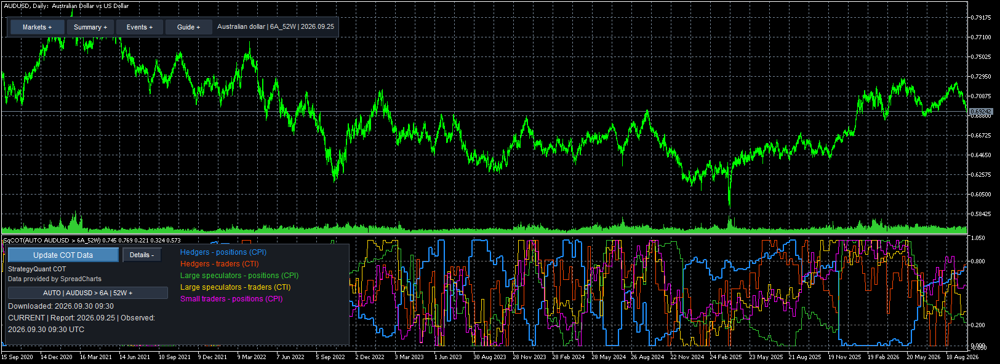
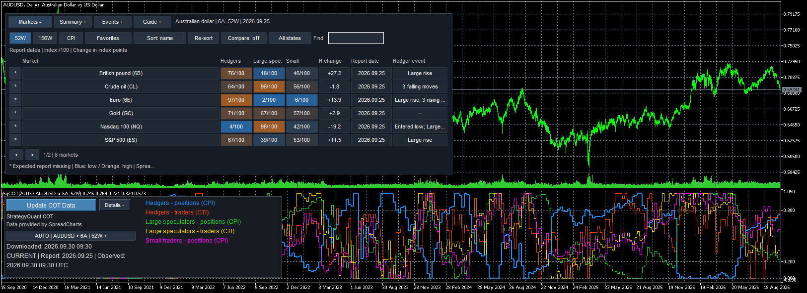
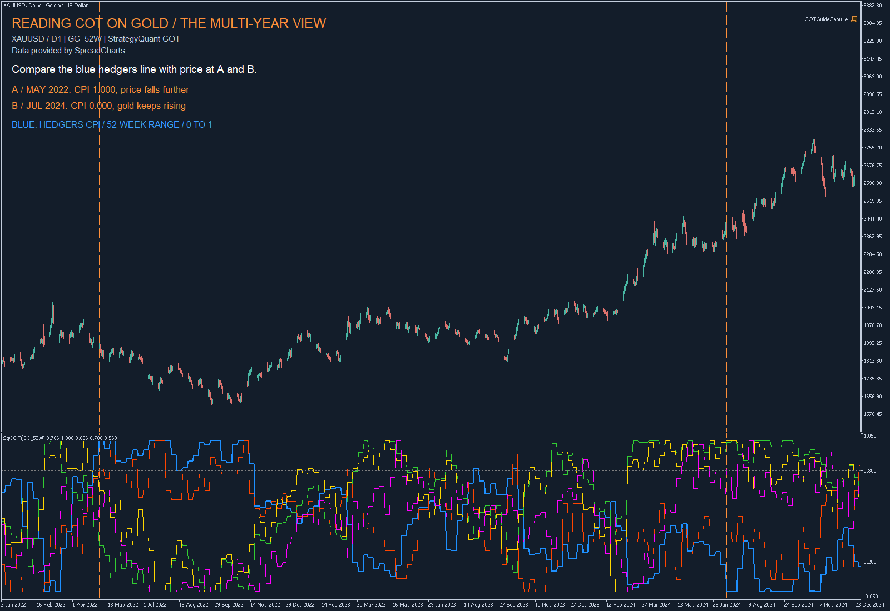
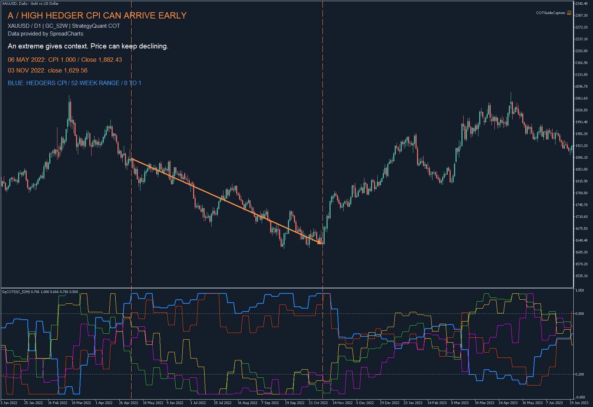
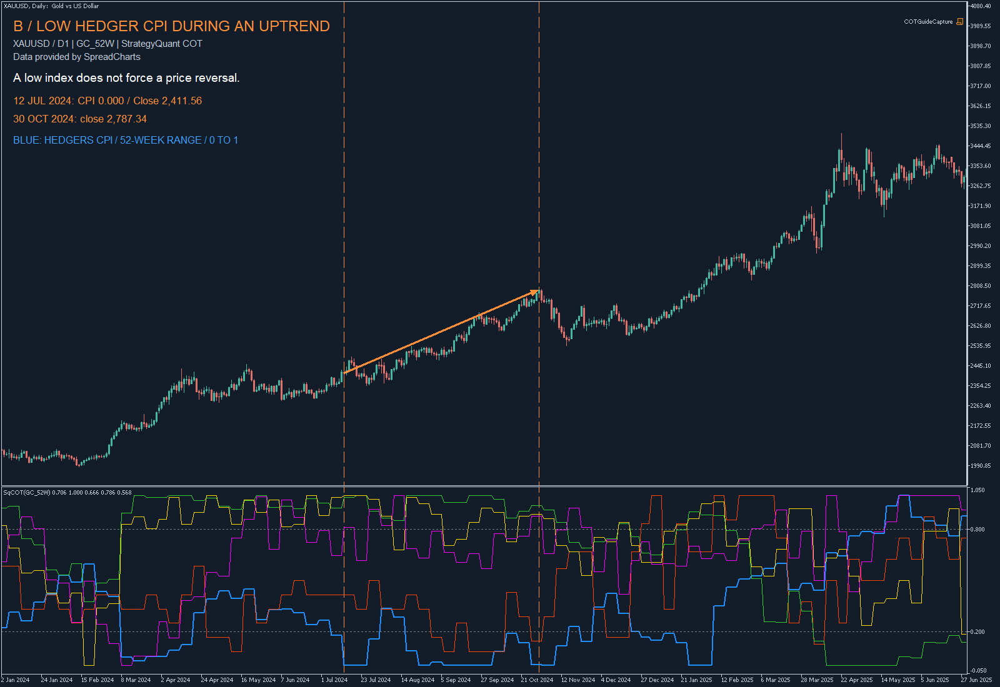

COT data.
Ready for your code.
One background downloader, a shared revision history and an explicit readiness check for every strategy. Use the chart to explore; use the SDK to decide whether data is usable.
Install the service, enter your licence and load the indicator.
02 / Explore marketsConnect CFDs to COTAutomatic symbol matching, one shared CSV and manual overrides.
03 / Build a strategyRead data from your EASDK readiness, iCustom buffers and reproducible snapshots.
One chart indicator: SqCOT now starts in AUTO mode and resolves chart symbols through one shared editable CSV, created automatically by the service. The included SqCOTAuto is a compatibility alias. Automatic mapping, administration and strategy integration →
Inside MetaTrader 5See the indicator on a chart
Explore the COT lines beneath the price chart and compare markets in the expandable heatmap. Select a screenshot to view it at full size.

Five lines, one selected market
Australian dollar (6A), 52-week view on an AUDUSD daily chart. The expanded Details panel identifies the participant groups and shows the data status beside the update control.

Compare markets at a glance
The Markets panel brings participant indices, report dates and changes together. Select a row to display that market’s COT lines below.
Learn to read COT on a gold chart → · Explore the chart controls → · Summary, events and compact panels →
COT in practice / Gold · D1Read positioning. Then read price.
COT (Commitments of Traders) describes how groups of traders are positioned in futures markets. The CFTC generally publishes the report on Friday using positions from the preceding Tuesday. It gives weekly context even when you display it beneath daily candles. About COT reports ↗
Here, the price chart is XAUUSD on D1, while the COT series is GC_52W, gold futures with a 52-week normalization window. Futures positioning provides context for the related CFD; it does not describe your broker’s CFD clients. The 52W setting is the index lookback, not the length or timeframe of the price chart.
The five lines: a quick reading key
| Default colour | Line | What to read |
|---|---|---|
| Blue | Hedgers · CPI | Normalized positioning of commercial traders. This is the line used in the examples below. |
| Orange-red | Hedgers · CTI | Normalized trader participation; a different measure from position size. |
| Green | Large speculators · CPI | Normalized positioning of large non-commercial traders. |
| Yellow | Large speculators · CTI | Normalized trader participation for this group. |
| Magenta | Small traders · CPI | Normalized positioning of the non-reportable group. |
Commercial classification reflects a trader’s business activity; it does not make every position a hedge or guarantee that the group anticipates the next price move. CFTC classification notes ↗

One market, two different responses to an extreme
Follow the blue hedger CPI line. A is a high reading during the 2022 decline; B is a low reading during the 2024 advance. Orange markers connect the selected reports with the price chart. Expand the examples for a closer look.
A · May 2022 — a high reading can arrive too early
On 6 May 2022, hedger CPI was 1.000. Gold closed at 1,882.43. The index was at its upper extreme, but price continued lower: the close on 3 November 2022 was 1,629.56. The arrow joins these two daily closes.

Separate the setup from the trigger
A high reading can identify an unusual positioning environment. It does not tell you when the decline ends. A rule such as “buy whenever CPI reaches 1” would have faced further price weakness in this example.
B · July 2024 — a low reading does not stop a trend
On 12 July 2024, hedger CPI was 0.000 and gold closed at 2,411.56. Gold later closed at 2,787.34 on 30 October 2024. The blue line remained near its lower end during much of this advance.

Respect the price trend
Low hedger CPI alone would have been a poor reason to assume an immediate top. Read the duration of an extreme and the price structure together. CTI adds participation context; it is not a directional buy or sell signal.
A practical way to read your next chart
- Check the market and data status. For gold, confirm GC and choose 52W or 156W deliberately.
- Look at several years first. Identify the price trend, recurring COT extremes and how long they lasted.
- Inspect the latest reports. Distinguish entering an extreme, staying there and leaving it. These are different observations.
- Define price confirmation and risk separately. For research, you could require a daily close above a previous swing high after a high-CPI setup. Specify the rule in advance and backtest it; these screenshots do not establish a profitable strategy.
Charts: MT5 XAUUSD daily prices from PepperstoneUK-Demo; COT indices provided by SpreadCharts. Prices are USD per troy ounce and can differ across brokers. These are retrospective chart examples: a report date on the chart does not mean its data was available at that day’s open. For strategy testing, use release/availability-aware data and the correct broker time profile. Time and availability →
01 / InstallationStart with one service
COT data access is included with your Quant Data Manager licence. Get a free QDM licence on the StrategyQuant website, then enter it once in the QDM Data License input of SqCOTService.
- Open the MT5 installation you want to use. Select File → Open Data Folder to locate its data directory.
- Extract the release ZIP and copy its
MQL5folder into that data directory. Indicators go inMQL5/Indicators, the service inMQL5/Services, EA examples inMQL5/Experts/Examples/SqCOT, and the snapshot export script inMQL5/Scripts. Refresh Navigator. - In Tools → Options → Expert Advisors, allow WebRequest for
https://cdn.strategyquantcdn.com. The full endpoint ishttps://cdn.strategyquantcdn.com/cot.php. - Start SqCOTService under Navigator → Services. Enter your Quant Data Manager key once in QDM Data License for both manual and scheduled updates. Confirm
RequiredSeriescontains your markets. KeepSchedulerCheckSeconds=60and the Friday 21:00 Europe/Prague defaults. One service owns the shared cache per Windows user. - Attach SqCOT to a chart. Leave
CotIdentifier=AUTOfor XAUUSD → GC and other configured CFD mappings. Set an exact series such asGC_52Wonly when needed for a specific market or SQX export. The indicator has an Update COT Data button that uses the licence configured in the running service. - Before an EA can use COT signals, verify
ReadLatestsucceeds andCanTradeis true. An HTTP success or a visible curve is insufficient.
02 / ArchitectureA single writer, many readers
HTTPS ZIP / unchanged response
Schedule, retry, validation
Committed generations + revisions
Local reads + readiness
The service performs HTTP requests. The visual indicator, data indicator and SDK read local files. Registration publishes only the required series and a lease timestamp. No download occurs just because a user scrolls a chart.
The service holds an exclusive file handle for ownership. OS handle release after a process crash allows another service to start; a heartbeat alone never grants ownership. Cache publication uses a lock, a complete generation and a recoverable metadata pointer. A failed import retains the previous valid generation. Readers load under the same cache lock, then work in memory.
The cache is under FILE_COMMON/StrategyQuant/COT/v2, usually %APPDATA%/MetaQuotes/Terminal/Common/Files/StrategyQuant/COT/v2, even when MT5 itself runs portable. All terminals under this Windows user share it. Use the same policy and licence for this shared installation.
| File / directory | Purpose |
|---|---|
generations/ | Validated binary series, immutable PIT revision records and runtime metadata. |
scheduler.dat and .previous | Last attempt, last successful check, next attempt, expected report, failure count and state. |
clients/ | Credential-free subscriptions; renew every 60 seconds, expire after 300 seconds. |
policy.dat | Shared settings for data freshness. |
snapshots/ | Explicit immutable test exports; never automatically pruned. |
alerts/ | Persisted notification claims and retry throttles. |
Retention keeps four recent completed generations and always protects the current and previous pointers. Unexpected files are not recursively deleted. Incomplete crash remnants, snapshots, request histories and old alert records require occasional operator review.
03 / LicensingEnter your Quant Data Manager licence
Start SqCOTService and enter your Quant Data Manager key once in its QDM Data License input. The service uses this setting for the chart’s Update COT Data button and for scheduled updates.
The indicator and included EAs do not need a licence input. Restart the service after changing its inputs, then check its status. Missing-key notifications include the QDM licence page and the input location; rejected-key messages also include the licence URL. Keep your key private.
04 / SchedulingFollow the weekly release window
Each Friday at 21:00 Europe/Prague time, the service begins looking for that Friday's report. The provider's date field identifies the report; an HTTP success or new download timestamp does not prove publication. The Prague clock conversion handles standard EU daylight-saving transitions without using the broker's or VPS's local time.
- At startup, recover persisted scheduling state and assess all required/registered series. Missing or damaged data is checked immediately.
- During the first two hours after Friday 21:00, the previous report can still pass
CanTrade()while the new report is checked. Once grace expires, a missing Friday report blocks new COT entries for that series. - Check the source every 15 minutes during the first two hours, hourly for the rest of the first day, then every four hours while the report is missing. A complete new report restores readiness automatically, including after a delayed Monday publication.
- Once all required reports are present, make one daily check for revisions until the next Friday window. A 204 unchanged response never advances the report date.
- After network/server failures, retry after 5, 15, 30 and then 60 minutes. Honor numeric Retry-After when it requests a longer wait, capped at 24 hours. Authentication/configuration errors enter CONFIG_BLOCKED.
Some official COT releases are delayed by holidays. Without an authoritative release schedule the service cannot know a delay in advance; the strict default blocks new entries after the two-hour grace and resumes when a valid report arrives.
A manual update has a 60-second cooldown. Restart the service after correcting blocked configuration, or submit a valid manual request. Automatic updates can be disabled without removing the button.
Quiet maintenance
The visual indicator checks local data every 60 seconds, sharing one gate between timer and tick callbacks. Scrolling does not force a data reload. A pending manual update temporarily uses a one-second progress timer; successful completion bypasses the idle gate. Automatic updates from other clients appear within the normal polling interval. Panel analytics are also throttled, with immediate refresh when the selected market or dataset changes. Objects are redrawn only when their content or layout changes.
The service's default 60-second check reads small metadata and file attributes. Full binary validation runs at startup, after a download, when generation, required markets, expected report or file attributes change, and at least once per hour during normal scheduling. A busy cache lock defers the check instead of triggering a download. Missing files and new requirements can trigger recovery without waiting until the next weekly deadline. Unchanged scheduler state is kept in memory without rewriting its files; changed download intent must still be persisted before networking.
These local checks are not HTTP requests. Network attempts follow persisted retry delays. An unchanged archive cannot satisfy the new weekly report requirement. The SDK checks that week's report date before allowing new entries. Buffer 8 in the 11-buffer data indicator describes historical row validity; use the SDK for current readiness.
The service targets a two-second heartbeat; transient write failures retry with a bounded delay instead of stopping the worker. Readers allow 15 seconds of normal heartbeat age or a bounded operation lease. The manual request queue remains responsive independently of data polling. Watchdog display/alerts in the visual indicator can take up to one additional polling interval. To activate the update, restart SqCOTService and reattach SqCOT after installing the new EX5 files. To inspect older bars, disable MT5 Chart Auto Scroll.
05 / ConfigurationService inputs
| Input | Default | Meaning |
|---|---|---|
| DownloadUrl | https://cdn.strategyquantcdn.com/cot.php | Licensed HTTPS endpoint. |
| DownloadTimeoutMs | 30000 | HTTP timeout, 1,000–120,000 ms. |
| AutoUpdateEnabled | true | Enable scheduling. |
| QDM Data License | empty | Quant Data Manager key for manual and scheduled downloads; set it in SqCOTService. |
| RequiredSeries | GC_52W,6E_52W,ES_52W | Baseline comma-separated requirements. Active SDK clients add their series. |
| ReleaseHourPrague | 21 | Friday probe start in Europe/Prague local time, 0–23. |
| ProviderLagMinutes | 0 | Optional delay after the Friday probe start, 0–1440 minutes. |
| ReportGraceMinutes | 120 | How long the previous report remains trade-ready after the new Friday window begins, 0–4320 minutes. |
| SchedulerCheckSeconds | 60 | Check local state, 1–3600 seconds; not the HTTP retry interval. |
| AvailabilityAlertDelayMinutes | 120 | Late-report alert delay, never earlier than the trade grace period. |
| NetworkAlertAfterFailures | 3 | Consecutive network failures before alert. |
| NotifyPopup / NotifyPush | true / false | Delivery channels; push requires MT5 Notifications setup. |
| AlertCooldownHours | 6 | Repeat suppression for a report/event. |
SqCOT chart settings
| Input | Default | Effect |
|---|---|---|
| CotIdentifier | AUTO | Map the chart symbol automatically; an exact ID such as GC_52W overrides mapping. This is the first SQX/iCustom input. |
| ValueIndex | 0 | Highlight one of the five curves with a thicker line; all five buffers remain available. This is the second SQX/iCustom input. |
| ShowUpdatePanel / ShowLegend | true / true | Show the download/status controls and the five-line legend. |
| ShowMarketsPanel | true | Show the collapsible market heatmap on the price chart. |
| RememberLayout | true | Restore this chart’s selected market, horizon and panel preferences. Saved choices can override the initial AUTO/horizon inputs on an attached chart; invisible iCustom handles do not restore clicks. |
| FavoriteMarkets | GC,6E,ES,NQ,CL,SI,ZB,6B | Initial heatmap favorites; saved chart preferences can take precedence. |
| UIInstance | main | Separate saved preferences when multiple SqCOT instances share one chart. |
| MarketsTop | 24 | Heatmap top margin in logical pixels (0–2000). |
| NotifyServicePopup / NotifyServicePush | true / false | Warn when the service watchdog detects an unavailable worker; push needs MT5 Notifications. |
| NotifyCOTEventsPopup / NotifyCOTEventsPush | false / false | Optional descriptive event alerts for the selected market after attachment. |
| AutoHorizonWeeks | 52 | Initial AUTO horizon: 52 or 156 weeks. Explicit series IDs keep their own horizon; remembered chart choices can take precedence. |
The first two visual input positions and five buffers remain available for explicit SQX calls. Exported SQX strategies that pass more inputs need individual validation. SDK watchdog notifications are opt-in through SetNotifications(popup,push).
06 / Data semanticsA report date is not an availability timestamp
reportDate identifies the provider's report. availableAtUtc records when this installation first observed that revision. generation identifies a committed dataset. revision increments for changed values of an existing report.
Unchanged rows preserve their original observation times. Revised rows retain their old versions so historical reads can select what was observed at that time. Truncated history and report regressions are rejected.
For bar-based reads, explicitly configure the broker clock. UTC means zero offset. UTC+120 means broker time is UTC plus 120 minutes; it does not model DST. Named profiles live under v2/profiles/NAME.csv. Each row is utcStartInclusive,utcEndExclusive,signedOffsetMinutes. Ambiguous autumn times and uncovered timestamps fail closed.
Snapshot exports can include one named profile. The SDK verifies its checksum and pins its text and PIT rows in memory for the run. It never consults the mutable live profile for a snapshot. Use a verified historical broker profile instead of guessing the current offset for old bars.
07 / Preferred EA interfaceRead, validate, then evaluate
Include SqCOTClient.mqh. Keep a client for the EA lifetime. The runnable example Examples/SqCOTLatest.mq5 includes live/snapshot selection and notification inputs. None of the supplied examples places orders.
#include <SqCOTClient.mqh>
CSqCOTClient cot;
int OnInit() {
return cot.OpenLive("GC_52W") ? INIT_SUCCEEDED : INIT_FAILED;
}
void OnTick() {
SqCOTSnapshot s;
if(!cot.ReadLatest(s) || !cot.CanTrade(s)) return;
double hedgerIndex = s.values[0]; // 0..1; zero is a valid value
// Evaluate your entry/filter rules here.
}
void OnDeinit(const int reason) { cot.Close(); }
OpenLive can succeed before the first cache exists, allowing recovery later. It fails in Strategy Tester. ReadLatest performs a throttled poll; a true return alone can still mean STALE. Always use CanTrade. It rechecks the weekly freshness policy, generation, values and snapshot age (maximum 60 seconds) against the current clock.
| Method | Contract |
|---|---|
| OpenLive(series) | Subscribe to a series. No licence argument. |
| OpenSnapshot(series, id, profile) | Open a verified export and pin it for the run. |
| Poll(force=false) | CHANGED=1, UNCHANGED=0, ERROR=-1, BUSY=-2; normal throttle is 1 second. |
| ReadLatest(snapshot) | Latest report available at current UTC. |
| ReadAt(utc, snapshot, reportShift=0) | Latest revision observed by that UTC; optional shift over actual available reports. |
| ReadReport(shift, snapshot) | Shift over reports at now, including irregular release intervals. |
| ReadBar(barTime, profile, snapshot) | Convert broker bar-open time explicitly, then read as of that time. |
| CanTrade(snapshot) | Current data readiness gate. Never evaluates profitability or sends orders. |
| SetNotifications(popup,push) | Opt into service-offline watchdog alerts. |
| Error / Generation / Series / DatasetKey | Diagnostics and dataset identity. |
| Close() | Release memory and live subscription. |
SqCOTSnapshot exposes seriesId, reportId, errorCode, values[5], reportDate, availableAtUtc, generation, expectedReport, evaluatedAtUtc, revision, dataStatus. The older compatibility fields remain in the struct but are unused by the weekly policy. Status values: MISSING=0, CURRENT=1, INVALID=2, TIME_UNKNOWN=3, STALE=4, SCHEDULE_UNKNOWN=5.
Values are normalized indices in the range 0–1. Missing/invalid fields block readiness. Do not treat EMPTY_VALUE or the source's missing sentinel -1 as a signal. A stopped service does not invalidate an otherwise current cached report; new entries are blocked when the report fails the configured freshness policy. Keep exit/risk management independent of new-entry COT readiness.
08 / iCustom API 1Use SqCOTData for new strategies
int handle = iCustom(_Symbol, _Period, "SqCOTData",
"GC_52W", "UTC+120", "", true);
// Inputs: SeriesId, BrokerTimeProfile, DatasetSnapshot, StrictTimeCreate the handle once in OnInit, wait for BarsCalculated, check every CopyBuffer return count and release the handle in OnDeinit. BrokerTimeProfile is required. DatasetSnapshot is required in the tester. StrictTime=false is rejected. All 11 plots use DRAW_NONE.
| Buffer | Name | Meaning |
|---|---|---|
| 0 | CPI hedgers | Position index, 0–1. |
| 1 | CTI hedgers | Trader participation index, 0–1. |
| 2 | CPI speculators | Position index, 0–1. |
| 3 | CTI speculators | Trader participation index, 0–1. |
| 4 | CPI small traders | Position index, 0–1. |
| 5 | REPORT_DATE | UTC report-date midnight in Unix seconds. |
| 6 | AVAILABLE_AT | Observed availability in Unix UTC seconds. |
| 7 | GENERATION | Exact integer encoded as double (≤ 2^53−1). |
| 8 | ROW_STATUS | 0 missing, 1 valid, 2 invalid fields, 3 unknown bar time. |
| 9 | REVISION | Revision of selected report, starting at 1. |
| 10 | API_VERSION | 1. |
SqCOTData inputs
| Input | Effect |
|---|---|
| SeriesId | Exact series such as GC_52W, or AUTO for mapped chart symbols. |
| BrokerTimeProfile | Required broker-to-UTC conversion; verify it for the trading server. |
| DatasetSnapshot | Leave empty for live data; a pinned export is required in Strategy Tester. |
| StrictTime | Must remain true; false is rejected during initialization. |
| AutoHorizonWeeks | 52 or 156 when SeriesId=AUTO. |
| AutoBrokerServer | Optional exact broker server for AUTO mapping and matching snapshot exports; empty uses the current account server. |
ROW_STATUS is historical row validity, not live freshness. Use the SDK readiness gate alongside CopyBuffer. The complete SqCOTReadBuffers.mq5 example checks API, row validity, generation before/after reading, matching SDK generation and stable bar identity.
Values are selected at each bar's open. A Friday report first observed inside an H1 bar appears in the next H1 bar; shift 1 reads the previous bar-open state. The indicator polls from OnCalculate and rebuilds historical buffers when generation changes. An invisible iCustom handle must be read/calculated; do not rely on chart-only timer events for its updates. The SDK offers timer-based reads when no ticks arrive.
09 / Portfolio readsReject mixed generations
Create one persistent client per required series and use COT_ReadBatch(clients, snapshots). A batch succeeds only when each client passes CanTrade and all have the same generation and dataset directory. If publication occurs between reads, it rejects the batch; retry on a later event.
SqCOTPortfolio.mq5 also requires identical report dates across its markets. Include every timeframe series used by the strategy: GC_52W and GC_156W are separate requirements. The API does not mix an older valid value from one market with a newer report from another.
An unavailable market does not prevent other markets from receiving updates. Clients for the missing market remain unavailable, and a portfolio batch requiring that market still fails. If a market disappears from the source, its revisions are retained for a later return but are not offered as active live data.
10 / StrategyQuant adapterConfigure the blocks explicitly
The existing SqCOTBlocks functions now read through the strict SDK. Include the adapter after defining the original g_currentBar variable. Call SqCOT_ConfigureBlocks("GC", profile, snapshotId) in initialization, SqCOT_BeginEvaluation() before evaluating a signal/score, and SqCOT_CloseBlocks() at shutdown. Follow SqCOTStrategyBlocks.mq5.
Both 52W and 156W series must be usable. Missing data returns false from boolean signals and EMPTY_VALUE from numeric helpers. Zero/invalid periods are rejected. Shift operations traverse actual available reports, so they do not assume seven days between records.
Legacy visual SqCOT inputs/buffers remain for chart compatibility. They do not provide the new strict point-in-time contract. New trading integration should use SqCOTData or CSqCOTClient.
11 / Reproducible testingFreeze an observed dataset
- Wait for a valid v2 cache in the live terminal.
- Run the script SqCOTExportSnapshot with a new safe SnapshotId, such as
gold-2026-10. For a named historical broker profile, also set BrokerProfile to its name; leave it empty for a fixed UTC offset. - The script exports all active PIT series, SHA-256 checksums, source metadata and the service policy effective at export time. An EXPORTING marker makes partial exports unreadable. Existing IDs are never overwritten.
- Choose a supplied example in Strategy Tester. Set SnapshotId and the matching BrokerTimeProfile. Use a period after the recorded initial observation time.
- Archive the snapshot, source commit, MT5 build, symbol history, test inputs and report together.
The tester performs no COT HTTP request, registration or notification. Local tester agents can read FILE_COMMON. Remote/cloud optimization is unsupported: snapshots are not automatically transferred to those agents. A broker profile missing from the export fails initialization.
The SDK pins data, policy and profile for the full run. Snapshot IDs are not intended for manual edits. PIT/profile checksums and the snapshot policy manifest detect accidental changes on opening; this is integrity checking, not a signed provider attestation. The export freezes the effective data-readiness settings together with the dataset. Later service-setting changes do not alter an existing snapshot; create a new snapshot to test the new settings.
12 / Visual explorationThe chart and market heatmap
Use the compact Markets / Summary / Events / Guide accordion, horizon comparison and descriptive event notifications. Read the compact insights and event API guide.
Markets + expands the market table over the price chart. Select a market to change the COT detail without changing the price symbol or timeframe. Choose 52W/156W, CPI/CTI, Favorites/All markets, search, sort and paging. Narrow layouts expose additional fields in tooltips.
Blue indicates a low normalized index, orange a high index and gray missing data. These are descriptive conditions, not probabilities or validated trade recommendations. H change is the difference between adjacent report records in index points; intervals may exceed a week.
Details + exposes timestamps, status and the five-line legend on an opaque background. StrategyQuant COT / Data provided by SpreadCharts attribution sits below Update. The report and observed availability have distinct meanings. RememberLayout preferences are chart-local and exclude credentials; tester and invisible handles do not inherit a clicked heatmap market.
Compare markets without leaving the chart
The favorites table shows CPI levels out of 100, report dates and descriptive events. Selecting a market changes the COT curves while the price chart remains in place. Blue and orange cells make low and high index readings easy to scan.
Know which line you are reading
The expanded legend names all five participant measures; the status and download timestamp stay separate from the plotted report dates.
The curves remain aligned to provider report dates for exploration. Use the strict data interface for strategy timing. For every available provider ID and its first report date, open the complete COT data history.
13 / OperationsMake failures visible
| State | Action |
|---|---|
| IDLE | Required reports are present; keep service running. |
| WAITING_CREDENTIALS | Set QDM Data License in SqCOTService Inputs, then restart the service. |
| WAITING_CLIENTS | No required series; configure RequiredSeries or start a client. |
| DOWNLOADING | Request in progress. Inspect logs if no progress beyond timeout/import time. |
| WAITING_NEW_REPORT | The new Friday report is not yet available; the previous report remains usable during grace. |
| REPORT_LATE | The grace period expired without a valid new report. New COT entries are blocked; retry continues. |
| BACKOFF | Transient failure. Inspect error and nextAttempt before manual retry. |
| CONFIG_BLOCKED | Correct licence, URL or WebRequest permission, then restart service. |
| POLICY_ERROR | Check weekly policy publication and shared-folder access. The service retries locally. |
| AUTO_DISABLED | Enable AutoUpdateEnabled for unattended updates. |
| CACHE_INVALID_OR_MISSING | Start service, inspect import error and disk space. Do not edit active generation files. |
Enable MT5 push notifications and configure the destination MetaQuotes ID yourself, then use MT5's Test button. Set service NotifyPush=true. Repeated events are deduplicated on disk. Failed sends retry no faster than once per minute, with a shared ten-second gate. Recovery is considered delivered only after all enabled channels succeed. Actual phone receipt must be verified on your device.
A service cannot report its own death. Enable a client/visual watchdog to detect an expired heartbeat after startup grace. If MT5 or the entire machine is stopped, an external uptime monitor is necessary; this package does not install one.
Check scheduler timestamps in UTC, not the broker's display clock. A successful check is different from a new generation and from a current expected report. Do not use a generic “file younger than seven days” gate.
14 / Data accessEnter your Quant Data Manager licence
COT data access is included with your Quant Data Manager licence. If you do not have a key yet, get a free QDM licence on the StrategyQuant website.
Enter the key once in QDM Data License in SqCOTService Inputs. The chart’s Update COT Data button and the automatic schedule both use that setting. Restart the service after changing the key.
If a licence error appears, check the entered key and your licence status. Contact StrategyQuant support if the problem persists. Do not include your licence key in public screenshots or logs.
15 / MigrationUpgrade deliberately
Stop the old service and detach old COT examples before replacing compiled files. Install the complete package, restart SqCOTService, reload indicators and recompile EAs against the supplied includes. Confirm health.dat reports schema 2 and SCHEDULE_MODE=WEEKLY before enabling new entries. Old compiled SDK clients cannot interpret the new policy and fail closed; mixing old and new binaries is unsupported.
In this release, SqCOT starts with CotIdentifier=AUTO; existing SQX calls that pass an exact first input retain that explicit series. The five visual buffers and first two input positions are unchanged. Validate exported strategies that pass additional indicator inputs.
Existing v2 cache generations are retained until a new validated archive is published; do not discard their observed availability history.
For rollback, stop the new service and restore the previous complete binary/settings set. Never run two writers against the same cache namespace.
16 / ResourcesExamples and integration references
Start with the supplied read-only EA examples to inspect values, report dates and data readiness.
The examples cover single-market reads, automatic mapping, portfolios, iCustom buffers, descriptive events and StrategyQuant adapter integration. They do not place orders. Use the snapshot export script to prepare reproducible local tests.
Reference documentation: MQL5 iCustom and CopyBuffer. The release includes compiled programs, sources, examples and SHA-256 checksums. Release 4.2.5 appears as 4.25 in MT5 program properties; the service log and package metadata use 4.2.5.
18 / Continuous operationRecovery, monitoring and restart
The worker survives transient heartbeat and policy-publication failures, preserves download retry deadlines and exposes scheduler progress in v2/health.dat. Closing MT5 still stops all of its programs.
Recovery behavior
- Heartbeat contention/write failures retry every 2–30 seconds; successful writes reset the failure count. A blocked reader cannot report the service healthy indefinitely.
- Missing shared-folder access at startup is retried. An already healthy owner is not replaced. During operation, failed intent persistence prevents HTTP and leaves the existing generation intact.
- Network failures use persisted 5/15/30/60-minute backoff plus jitter and respect numeric server Retry-After. Configuration failures require correction and service restart; missing unattended credentials have a distinct alert state.
- Required series receive BIN and PIT consistency checks at startup, after updates, on file-attribute changes and hourly. An unchanged remote archive can rebuild damaged BIN files while retaining valid PIT observation history. Missing/corrupt PIT history requires restoration from a verified backup: the service never invents the original observation times.
- Live SDK readers revalidate PIT files when attributes change and hourly. Snapshot readers remain pinned for the entire test. Legacy buffer ordering and input positions are unchanged.
Data freshness and new entries
A report must have valid values and observed point-in-time availability. After Friday 21:00 Europe/Prague, the service probes for that Friday's report. After the default two-hour grace period, CanTrade() rejects new entries until a valid report with the expected Friday date arrives. A download or successful source check cannot extend readiness. Existing chart data remains available for diagnosis. Keep position management independent of this entry gate.
Holiday delays can temporarily block new entries. Backtest snapshots preserve their captured policy for reproducible results.
Monitor the worker independently of chart ticks
Enable the indicator’s service notifications and check the service log when a warning appears. For unattended operation, configure your Windows/VPS monitoring to check that the intended MT5 process is running, disk space is available and the service continues publishing its status.
The local v2/health.dat file reports TIMESTAMP, INSTANCE, STATE, ERROR, AUTO_UPDATE, SCHEDULE_MODE, DATA_READY, EXPECTED_REPORT, NEXT_ATTEMPT and HEARTBEAT_FAILURES. A current timestamp confirms status publication; inspect the operating state and data readiness separately. These diagnostics do not replace the EA’s CanTrade() check.
External monitoring and host startup are configured separately. A running MT5 indicator cannot warn you when the entire machine is offline.
Installation, backup and restart procedure
- Keep a verified backup of the complete
StrategyQuant/COT/v2andconfigfolders. Preserve generations, PIT files, runtime metadata and broker profiles together. Stop the writer or use a consistent filesystem snapshot during backup. - Copy the release MQL5 files into the terminal data directory shown by File → Open Data Folder. Restart SqCOTService to load the new binary, confirm
Service 4.2.5 started, and reattach indicators/recompile EAs using the updated includes. - Set
AutoUpdateEnabled=true,ReleaseHourPrague=21,ReportGraceMinutes=120,SchedulerCheckSeconds=60and QDM Data License in SqCOTService. Include every required market/horizon in RequiredSeries. Configure MT5 push notifications if needed and verify delivery to your actual phone. - Confirm the service is running, its status timestamp advances and
DATA_READY=1. Inspect the service log for any reported error. - Configure host startup to launch your MT5 installation; use
/portableif that installation runs in portable mode. Verify service recovery after a controlled terminal/Windows restart; do not restart a host carrying unmanaged positions merely to test this procedure.
Verify your trading setup
On a demo setup, check that fresh data reaches the EA, stale or missing reports block new entries, notifications reach your device, and updates resume after a terminal restart. Keep exits and risk management independent of COT entry readiness. Verify the exact generated StrategyQuant strategy with your broker time profile before using it live.